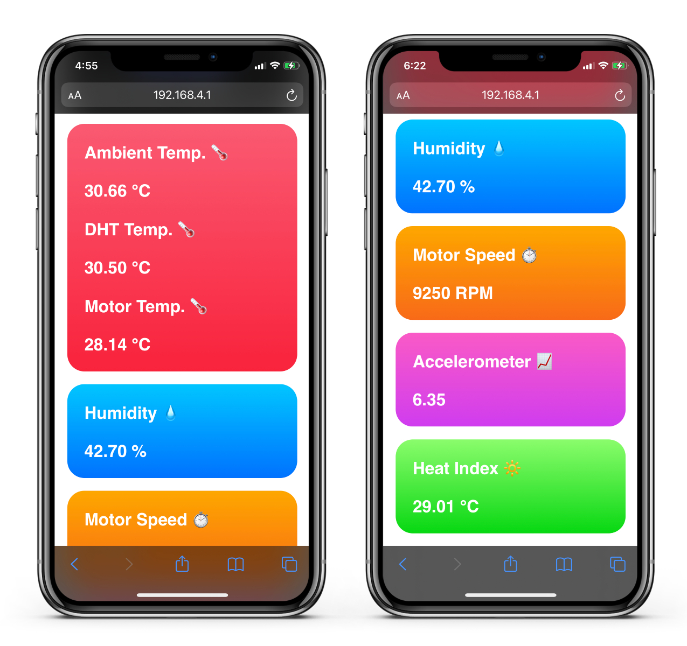

1 – Introduction
The main concept of introducing IoT devices is to automatically monitor and control the performance of equipment
in manufacturing industries and plants by displaying the data anywhere at any time whenever an internet connection
is available. This provides critical information for the engineer to determine whether they should schedule maintenance
for the affected devices or not. Failure to do so would results in equipment malfunction and longer downtime and
production loss. Different methods can be applied to determine the overall performance of the system, this include
performing vibration test for electrical motors, determining the temperature of the operated equipment, and in special
cases applying image processing techniques to observe the time- lapsed version of the system response over long
period of operation. These abnormalities can be difficult to detect without using specialized tools and sensors.
Therefore, the introduction of internet cloud-based embedded electronic devices are used to automatically maintain
and control proper operation of the system. The action of detecting faults or threats in a device before they occur
and implementing repairs on it to reduce failure is called “predictive maintenance.” Predictive maintenance is a set
of activities that detect changes in the physical condition of equipment (signs of failure) to carry out the
appropriate maintenance work for maximizing the service life of equipment without increasing the risk of failure [1].
Much emphasis has been given to the research and development of high-speed machine systems possessing high levels of
programmability and reconfigurability. Motion cycle demands in such machines are high; motors and drives are required
to perform under demanding conditions, hence the need for a predictive maintenance system. Modern machines typically
use some form of direct current (DC) motor and the process described is based upon such motors. The DC motor is one
of the first machines devised to convert electrical power into mechanical power. Recent improvements in DC machines,
and specifically the emergence of the brushless motor have led to its wide usage due to its high torque and small
size when compared to induction motors [2].
This paper discusses how predictive maintenance strategies are used to monitor the health of a DC motor under
various conditions by applying vibration tests using the data obtained from an accelerometer module. These tests
are used to analyze and interpret the data in the frequency domain with the help of Fourier equations. Any shift
in the frequencies during normal conditions can be analyzed to detect any failures in the motor. This form of
digital signal processing technique is reliable and cost-effective solution to be implement for industrial
applications. However, both the given load and speed of the motor should be considered when performing this type
of analysis, since the dominant frequencies can shift based on different factors. This implies that different data
acquisition should be added and analyzed to conclude whether the observed results are due to system errors or
otherwise.
The paper is divided into four main sections. Section 2 presents in detail the theory and procedure for the
purposed maintenance system of DC motor. The results obtained for the experimental predictive maintenance is
presented in Section 3. Finally, the conclusion is summarized in section 4.
2 – Theory and Procedure
One of the most cost-effective maintenance techniques is using predictive maintenance which utilizes actual
operating condition of equipment, material, and systems to optimize manufacturing operation. Standard predictive
maintenance management program utilizes a combination of most cost- effective tools (e.g., vibration monitoring,
process parameter monitoring, thermography, tribology, visual inspection) to obtain the actual operating conditions
of critical plant systems. These actual manufacturing data are used to schedule all maintenance activities on an
as-needed basis. Utilizing predictive maintenance in maintenance management program improves the ability to optimize
the availability of process machinery and greatly reduces the cost of maintenance and improves production quality [3].
Predictive maintenance not only predicts a future failure, but also pinpoints problems in our complex machinery and
helps identify what parts need to be fixed to minimize cost and maximize uptime operation. A simple representation
graph of predictive maintenance strategy can be seen in Fig. 1 that identifies when it is the optimum time an engineer
should schedule a maintenance.

Fig. 1 – Machine health vs time required in determining the optimum period to schedule predictive maintenance
2.1 – System Architecture
The architecture for the overall system is represented in Fig. 14 from Appendix A which will define how the system
will function. This model assumes that the system is capable to be implemented in real-time operations. The model
can be classified into four main stages these include: signal acquisition and preprocessing, data analysis and
processing, system monitoring and control, and web-based data logging. These stages will be summarized in detail
in the next upcoming sections of this report. The system will operate using a low-cost Wi-Fi microchip, with a
full TCP/IP stack and microcontroller capability. This allows the user to utilize the microcontroller to handle
all the system operation and provide Wi-Fi connectivity to be integrated with IoT applications.
2.2 – Signal Acquisition and Pre-processing
The first step to perform predictive maintenance is to acquire the data provided by each individual sensor. Analog
sensors can be directed to any peripherals of the microcontroller that support ADC capability. These peripherals
should be able to provide high sampling resolution, good SQNR, unity gain, and good dynamic range. If the ADC
circuit lacks some of these specifications, a simple hardware solution can be used to minimize noise interference
using electronic low-pass (anti-aliasing) filter prior to the ADC in case of low SQNR or limit the input voltage
range using high efficiency buck converter circuit. In some cases, a microcontroller might not have enough ADC pins
for multiple analog data. This can be overcome by using a high-speed CMOS logic analog MUX/DEMUX circuit to switch
between multiple analog sensors using a single ADC pin. These important points are necessary to determine the analog
speed and temperature of the DC motor.
Speed measurement of electronic motors can be done in several ways. One method to read the speed of the motor is to
measure the electrical signals of the light transferred between two isolated circuits using a light generating
photodiode and light sensing phototransistor connected between the radial load of the motor’s shaft. This form of
sensor measurement can be found in optocoupler circuits, where the voltage generated from the optocoupler can be
interpreted as an AC square wave signal. This signal can be fed directly to the microcontroller to measure the total
RPM of the motor. Measuring the signal directly will require additional signal processing and conditioning techniques
and higher sampling rate which might affect the accuracy of the readings. Since predictive maintenance strategy relies
heavily on the speed parameter of the motor, a better and more accurate solution is to use a frequency-to-voltage
converter circuit to convert the frequency of the square wave signal to analog DC voltage for ADC measurements
To determine the temperature of the motor during operation, a contact type, linearly proportional analog centigrade
temperature sensor can be attached directly to the motor. For accurate readings, these devices should have low output
impedance to simplify interfacing to ADC circuit. The performance characteristics of the output signal voltage vs
temperature slop can be scaled and offset to meet the desired temperature range. This type of modification can be
done using a simple negative-feedback operational amplifier circuit as shown in Fig. 2.
Fig. 2 – Scaling and offsetting using negative feedback operational amplifier circuit configuration
Where ùëÖ4 is the feedback resistor, ùëÖ3 is the inverting input resistor and both ùëÖ1 and ùëÖ2 are potential divider
network used to apply the required offset voltage. The output voltage of the operational amplifier will be applied
to the microcontroller’s analog input peripheral pin. The transfer function that describes the relationship between
the non-inverting input and output voltage of the amplifier is given as follows:
To achieve the desired gain and offset for a linearly proportional analog sensor, the straight-line equation
is used. For a 10-bit ADC circuit, a simple TMP36 temperature sensor can be configured to operate between -10 °C
and 50 °C (0.4- 1V) instead of its entire range of -25 °C and 150 °C (0.2-1.8V) using the circuit introduced in
Fig. 2 for a motor predictive maintenance prototype. This is done to include the entire range of ADC for higher
accuracy of sampled readings. Therefore, the aim is to scale and offset the range of the sensor so that the
microcontroller receives 0V when the sensor outputs 0.4V and 5V when it outputs 1V as it can be seen from the
straight-line equation in Fig 3.
Fig. 3 – Desired voltage vs TMP36 output voltage
The gradient of the plot in the above figure can be worked out to be approximately 8.34, then determining the
intercept by setting y = 0 (x = 0.4) so that the straight-line equation can be written as follows:
Therefore, an overall gain of 8.34 with an offset of 0.4V (which will also be amplified by 8.34) is required. Using the
transfer function of the non-inverting amplifier, a resistive ratio of 7.34 is obtained, thus the value of R3 from Fig. 2
must be at least 10 times greater than the anticipated value of R2. Assuming a value of R3 = 10kΩ, R4 must be equal to
73.4kΩ (nearest E12 series combination is 68kΩ and 5.6kΩ). The voltage across R2 must be 0.4V (the required offset).
With a Vs = 5 volts and selecting R2 = 1kΩ, R1 is found to equal 11.5kΩ (nearest E12 series combination is 6.8kΩ and
4.7kΩ), however R1 may need tweaking to achieve ideal scaling.
Another form of temperature sensor that can be utilized is the non-contact type sensor such as IR sensors. However,
these sensors are not considered an ideal use for industrial applications since they rely on the space optical
transmission for thermal measurement; therefore, the environment needs to be clean, without dust, high humidity,
or similar which might not be the case for industry-base environment.
When dealing with digital sensors and DSP chips, they can provide processed digital data using different
communication protocols such as UART, I2C, and SPI. The microcontroller architecture should be flexible to
handle these form of communication protocols in case they are needed to be called. These digital sensors can
be configured to provide accurate readings by passing the data to a signal filtering and conditioning circuits
available on the module IC before data transmission to the microcontroller. However, for high speed/precision
applications, further filtering techniques must be implemented to compensate for any data drift and overshoot
errors, this can be done multiple ways based on the computational power of the microcontroller such as applying
sensor fusion techniques or implementing a more complex algorithm such as Kalman filter. It is more sensible
though, to allow an internet cloud server to handle the heavy complicated processes that otherwise cannot be
achieved using a basic microcontroller system.
Vibration test on the motor can be done using a digital inertial measurement unit (IMU) that measure and provide an
object's force, angular rate, and usually the orientation of the object, using a combination of accelerometers,
gyroscopes, and magnetometers. This unit can be also found in systems that requires real-time and long-term position
stability such as quadcopters by using the principle of control theories. However, for an electrical motor vibration
test, it is sufficient to analyze the accelerometer data only without the need of a sophisticated algorithms and
mathematical equations unless the data is exposed to high amounts of noise and drift.
2.3 – Data Analysis and Processing
Generally, the IMU unit will be configured to output the three-axis accelerometer data to calculate the
average RMS acceleration. Since the RMS value of a signal represents the average (mean) power, the total
energy of a signal is preserved under the Fourier transform based on Parseval's theorem; therefore, the sum
(or integral) of the square of a function is equal to the sum (or integral) of the square of its transform.
The standard method to calculate the RMS value of a discrete data signal x[n] is stated as:
where Xrms is the RMS value of x[n] and N is the sampling period of the signal x[n]. The RMS value is generally
the most useful value for vibration test since it directly relates to the energy content of the vibration profile
and thus the destructive capability of the vibration. RMS also considers the time history of the wave form. Fourier
transformation of a signal can be implemented to observe the dominant frequencies in the vibration test and determine
the acceptable shift in frequencies based on the speed and temperature of the motor until a maintenance is required
to be performed. To compute the Fourier transform for a discrete-time system, the discrete Fourier transform (DFT)
is stated as:
where, X[k] is the discrete Fourier transform of the periodic and discrete signal x[n] and N is the sampling period.
The fast Fourier transform (FFT) is an efficient algorithm used to compute the discrete Fourier transform of the
signal x[n]. Hence as the name implies, it is a computational method of calculating the discrete Fourier transform
significantly faster than directly computing it. The FFT reduces the number of computations needed for a problem of
size N from N^2 to N×log⁡N. This algorithm can be represented by separating the DFT into even and odd indexed
sub-sequences.
Both sub-sequences can be summed together giving an advantage of computing the even and odd indexed sub-sequences
concurrently.
The algorithm can be further improved by applying the divide-and-conquer approach, halving the computational cost
each time. In other words, it is possible to continue to split the problem size until a group of two are left then
directly compute the DFT for each of those pairs [4]. This form of signal analysis can be done either directly from
the microcontroller or indirectly through cloud computing. As mentioned previously, the processed FFT data is dependent
on the speed and temperature of the motor. This is because any shift in the frequencies relies on the given power of the
motor, and thus on the measured speed and overall temperature. For example, if the power applied to the motor remains
constant and the measured speed and temperature match the expected values, then the Fourier analysis results should
correlate to these conditions. However, when the motor does not maintain proper operation at a given power, then either
the speed, temperature, or both values will show unexpected results.
In terms of long period of measurements and prediction strategy, one cannot rely on a single data alone.
Combining both speed and temperature data with vibration test provides the engineer a better insight to determine
the expected time of equipment failure and when it is necessary to perform maintenance procedure. Other useful
data that can be included for the test is ambient temperature and humidity measurement which can be used to determine
the cause of failure for a better understanding of the problem.
2.4 – System Monitoring and Control
Once all the data has been gathered and processed, the next step is to decide how to implement it to maintain
and control the system. Data obtained from vibration test can be used for both FFT evaluation in future prediction
and real-time monitoring for the state of electrical machines. This can be done by using a standard vibration
severity chart based on ISO 10816 as a guidance for evaluating vibration severity in machines operating in the 10
to 200Hz (600 to 12,000 RPM) frequency range as shown in Table 1. Examples of these types of machines are small,
direct-coupled, electric motors and pumps, production motors, medium motors, generators, steam and gas turbines,
turbo-compressors, turbo-pumps, and fans.
An emergency system should be used in case the machine reaches an unacceptable vibration severity by either
automatically or manually controlling the system to maintain proper safety and operation. This can be monitored
and controlled traditionally from a local centralized system or internet cloud-based centralized system where any
important information is accessible to directly notify maintenance experts in charge real time, anytime, when a
schedule is generated without them having to physical move to the plant. This helps decrease maintenance cost and
increase efficiency and production time.
For a prototype system model, the microcontroller can be programmed using different software compiler languages such
as C, C++, and Python scripts to perform data acquisition and digitization. Chip level programming uses field
programmable gate array (FPGA) hardware circuits to develop IC devices optimized for a specific load. This is
essential when developing high speed hardware communication chips for IoT applications. Fortunately, many low-cost
Wi-Fi microchips, with a full microcontroller capability are available to use for testing and prototype purposes.
Therefore, these microchips contain the necessary circuits for both data acquisition and wireless communication.
While it is (barely) possible to do FFT on a microcontroller-based system, it is more ideal to do signal processing
of this sort by passing the data to a local or cloud computing hub for monitoring and post-processing analysis.
This ensures that the microcontroller focuses on data gathering and handling wireless communication protocol. In
case the system detects an unacceptable operation from the electrical machine, it is suitable to implement an
emergency detection and prevention system to quickly counter this problem. For our prototype system this can be
done manually or automatically. For manual control, an external interrupt pin can be used as an indication to cut
the power fed to the electrical machine through a relay switch. Automatic control applies a conditional limit to
the system based on the vibration severity per ISO 10816 standard. Once the vibration severity has reached a critical
or unacceptable level, the microcontroller will send a confirmation signal to disable the power input on the motor.
Table 1 – Vibration severity standard based on ISO 10816
2.5 – Web-based Data Logging
This section discusses how data monitoring and logging through a web server host is achieved to provide an insight
on how IoT technology is implemented. One additional and important component in developing a functional IoT was the
Internet Protocol version 6 (IPV6) for its remarkably intelligent decision to increase address space. The address
space expansion means that assigning an IPV6 address to every device on the surface of the earth is still sufficient,
still have enough addresses left to do another 100+ earths. In other words, running out of internet addresses is not
going to happen anytime soon. When thinking of the IoT, consider the idea, “any device capable, can be interconnected
with other devices.” The IoT is ripe for new and creative ideas to add to the tasks already in use [5].
This opens doors for big data engineers to gather numerous information from each and every interconnected IoT devices
to be used for optimizing the system and conclude future predictions for a better and more cost-effective solutions to
be used. However, with the increase application and IoT devices, several challenges with implementing security within
an IoT network arises. First, IoT systems are heterogeneous. There are different types of devices, methods of
communication, types of data being transferred and shared, various resource levels of devices, and system
configurations. Each distinct element adds to the challenge of effectively secure IoT.
A second challenge inheres in the number of devices that are connected together. Billions of devices connected
together provides a new research area of focus when considering nominal function, resiliency, and security as well.
To address these challenges in securing IoT devices, we propose using machine learning within an IoT gateway to help
secure the system. Machine learning is an area of A.I in which computer programs are enabled to learn from experience,
examples, and analogies. As learning occurs, the capabilities within the program become more intelligent and the
program becomes capable of making informed decisions [6]. When implementing IoT in smart industry domains, these
security measurements should be used to insure proper protection against cyber-attacks such as distributed denial
of service (DDoS), cross-site scripting, and watering hole attacks to help companies in regulated industries by
managing and maintaining enhanced infrastructures for compliance and to protect personal and financial data. However,
the topic of machine learnings and A.I for big data analysis and security is beyond the scope of this paper and will
not be covered, yet it is worth mentioning these points out since they play an important role when dealing with IoT
technologies.
For a prototype model, the given Wi-Fi microchip, with a microcontroller capability can be used as a stand-alone
server for web hosting and data logging. Therefore, the module will behave as an access point beacon by allowing
multiple devices (clients) to connect to it through its own IP, gateway, and subnet. A separate Hyper Text Markup
Language (HTML) file is stored in the chip’s flash memory to display the web page contents and handle both the root
and form requests. The module will operate using a standard 2.5 GHz Wi-Fi frequency band, other high-end microchips
can operate on both 2.5 and 5 GHz bands for highspeed bandwidth transmission. Data logging is generally done through
database server that stores organized information in the form of tables using different database services. To simulate
this form of data logging, the microchips and/or microcontrollers have a dedicated organized arrays of floating-gate
transistors circuit for memory storage known as electrically erasable programmable read-only memory (EEPROM).
This form of memory stores data in the form of a single byte (8 bits). Table 2 shows the total number of bytes
required to store different data types based on a 32-bit and 64-bit data model. It should be noted that an EEPROM
has a limited life for erasing and reprogramming, now reaching a million operations in modern EEPROMs. The life
cycle for EEPROM is an important consideration when deciding which type of data must be stored on it.
| Data Type |
32-bit Size |
64-bit Size |
| char |
1 byte |
1 byte |
| short |
2 bytes |
2 bytes |
| int |
4 bytes |
4 bytes |
| long |
4 bytes |
8 bytes |
| float |
4 bytes |
4 bytes |
| double |
8 bytes |
8 bytes |
| double |
16 bytes |
16 bytes |
Table 2 – Integer and floating-point data types based on a 32-bit and 64-bit size models
3 – Experimental Results and Analysis
3.1 - Hardware Design Implementation
A miniaturized hardware model for the purposed prototype predictive maintenance motor project to be implemented
in smart industry domain is designed on a two layered printed circuit board. The final circuit board with all the
components is shown in Fig 10 from Appendix A. The circuit operates on a 12V DC input voltage and a power conditioning
circuit through a linear voltage regulator to lower the input voltage to 10V and 5V to match the recommended operation
of each individual module. The 12V DC motor is connected to an h-bridge circuit to control both the speed and direction
from 0V to 10V using a pulse-width modulation (PWM) signal. Ambient and motor analog temperature readings are measured
using the scaling and offsetting process via a non-inverting amplifier configuration introduced in section II part B.
Another form of ambient temperature and humidity measurement is applied using a digital sensor for referencing and
correction. A frequency to voltage converter IC chip that operates directly from the 12V supply is used to convert the
pulses measured by the optocoupler circuit to an analog voltage format. To overcome the issue of having a single or
limited number of ADC pins, a MUX/DEMUX IC DIL chip is used to switch between each individual sensor readings. Data
obtained from the accelerometer is achieved through I2C communication protocol between the module and the microcontroller.
Additionally, a 128 by 32 pixels OLED screen is connected on the same I2C bus to display measured data and various icons
to indicate different operations for more added functionality. Finally, an external interrupt button is used to simulate
an emergency pause on the motor for applying a manual safety switch in case a failure occurs on the system.
3.2 - FFT Post-Processing
The average and RMS data obtained from the vibration test is sent to a centralized cloud/local system to perform
post-processing for fast Fourier analysis. The microcontroller is programmed to sample the data at Ts = 0.01s at N
number of samples, where N must be a power of 2 (2, 4, 8, 16, 32, 64, 128, etc). For this vibration test, the total
number of samples N is chosen to be 256. Therefore, the test can be done every 2.55 seconds starting from Ts=0s. The
following results obtained in Fig. 4 and 5 provides the computed FFT when the DC motor runs at 100% PWM signal (10V)
and 50% PWM signal (5V), respectively. An impulse signal is generated at 50Hz frequency when the motor runs at 10V,
which corresponds to a measured speed of 9250 RPM; whereas, at 5V, an impulse signal is generated at 27.75Hz frequency
that corresponds to a measured speed of 4624 RPM.
Fig. 4 – FFT vibration analysis of DC motor at 100% PWM
Fig. 5 – FFT vibration analysis of DC motor at 50% PWM
During motor fault, analyzing the FFT output obtained from the vibration test will yield results that does not
correlates to the expected output response. For example, consider the graph given in Fig. 3 when the motor operates
at 100% PWM signal. Whenever a failure occurs in the motor, expect a shift in the frequency of the impulse signal
response observed from the FFT data as shown in Fig. 6. Other results that suggest issues in the system including
undesired impulses that indicates instability of the motor. These analysis with the help of various data obtained
about the behavior of the system can help us understand the scope of the problem and act accordingly by using
predictive maintenance assessment to prevent any future problems.
Fig. 6 – FFT vibration analysis of DC motor at 100% PWM during healthy and faulty operations
3.3 - IoT Web-Server
The microcontroller is established to perform the required data acquisitions and can be either used as a web host
to transmit the given data to a cloud or locally installed server. For prototype purposes, the device behaves as a
standalone web server by acting as a Wi-Fi access point to allow other devices within the vicinity to connect to it
and collect and monitor data and control the speed and direction of the motor. Once a device is connected, a wireless
icon will appear on the OLED screen to indicate that the microcontroller has successfully establish a connection and
is ready to display the content of the HTML web page. The results of this can be seen in Fig. 7 and 8.
Fig. 7 – HTML web server for controlling the direction and speed of the motor

Fig. 8 – HTML web server for monitoring data obtained from each individual sensor integrated with the system
During an emergency pause due to motor failure, an icon will be displayed on the OLED screen to indicate that
motor is no longer in operation, and the following message is displayed on the web page for the user:
Fig. 9 – HTML web server message during emergency pause
4 – Conclusion
The technology development for IoT is still in its early stages; however, with the help of IPv6, many IoT devices
can be interconnected together through the internet to perform complex operations and gather huge amount of essential
data. This opens doors for big data engineers to analyze and benefit from this technology to perform optimization and
future prediction through the help of machine learning and A.I. Industries are moving towards a smarter and more
interconnected systems with the help of internet and cloud computing. This results in better management by integrating
predictive maintenance strategies, reducing the cost and improves the system’s overall resiliency. One method
introduced in this paper is by performing vibration test using FFT analysis, which when combined with other vibration
tests can be proven to be a powerful method to perform the necessary procedure for predictive analysis.
5 – Appendix
5.1 - Some Images
Fig. 10 – Overall system’s architecture
Fig. 11 – Prototype circuit board
Fig. 12 – Prototype board during operation
Fig. 13 – PCB layout design
Fig. 14 – Circuit schematic diagram
6 – References
[1] - Kahiomba Sonia Kiangala1 and Zenghui Wang, “Initiating predictive maintenance for a conveyor motor in a bottling
plant using industry 4.0 concepts”, The International Journal of Advanced Manufacturing Technology, May 24, 2018, para.
3. [Accessed: Dec. 25, 2020].
[2] - Dheeraj Bansal, David J. Evans, Barrie Jones, “A real-time predictive maintenance system for machine systems”,
International Journal of Machine Tools and Manufacture, 2004, vol. 4. [Accessed: Dec. 25, 2020].
[3] - R. K. Mobley (2011) Maintenance fundamentals. 2nd ed. Butterworth-Heinemann ISBN 9780080478982.
[4] - Cory Maklin, “Fast Fourier Transform”, Dec 29, 2019, [Online]. Available:
https://towardsdatascience.com/fast-fourier-transform-937926e591cb, [Accessed Dec. 27, 2020]
[5] - Keith D. Foote, “A Brief History of the Internet of Things”, Aug 16, 2016, [Online]. Available:
https://www.dataversity.net/brief-history-internet-things/, [Accessed Dec. 29, 2020]
[6] - J. Cañedo and A. Skjellum, "Using machine learning to secure IoT systems," 2016 14th Annual Conference on
Privacy, Security and Trust (PST), Auckland, 2016, pp. 219-222, doi: 10.1109/PST.2016.7906930. [Accessed:
Dec. 30, 2020].